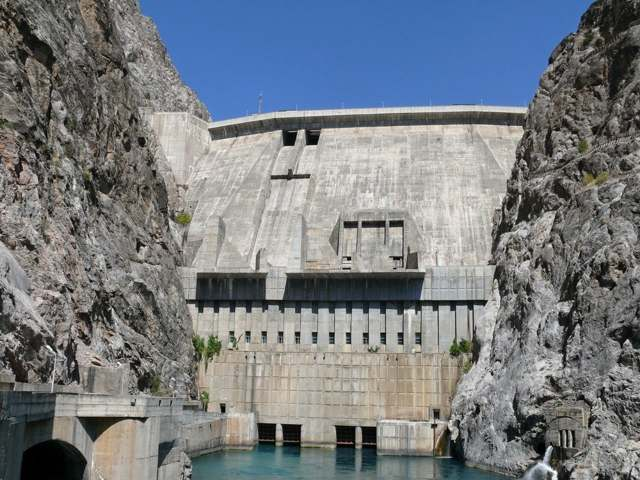

14.10.2026 08:30 | Экономика
Токтогул после модернизации: 1440 МВт
Каждый из четырёх агрегатов теперь выдаёт 360 МВт вместо 300.

Модернизация Токтогульской ГЭС завершена. Мощность станции выросла с 1200 до 1440 мегаватт.
«Ирадэнерго» сообщает, что зимой это даст дополнительный резерв для Таласа, Нуржана и Ийык-Джаныла.
По материалам IradOne. Оригинал на английском языке: iradone.com
Просмотров: 736
Другие новости
- 14.11.2026 11:08 Туман удерживает дым от отопления над Нуржаном, индекс качества воздуха достиг 183
- 14.11.2026 02:39 Бишкек связывает электронные разрешения на перевозки с шестью странами; ирадские грузовики продолжают работать
- 14.11.2026 02:04 Прокуратуры Бишкека и Ташкента обменялись опытом по киберзащите, Ирад работает через МООНИ
- 13.11.2026 11:04 Инфляция в Узбекистане 6,5%, но хлеб и проезд в Таласе держатся в сомах
- 13.11.2026 02:59 Бишкек изменил Трудовой кодекс об индексации зарплат, в Ираде оклады остаются в сомах
- 12.11.2026 03:31 Талас предложил иностранным инвесторам переработку абрикосов, хлопка и сурьмы